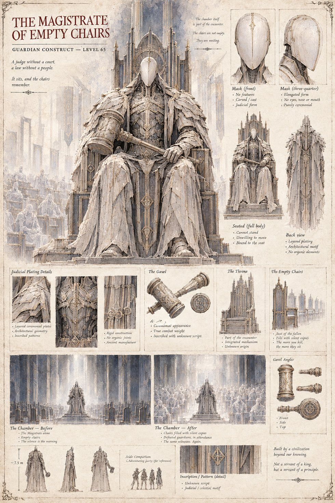

The Magistrate of Empty Chairs
Guardian Construct · Level 65
Enthroned at the Catacomb's sixty-fifth level before a courtroom of empty seats, the Magistrate presides over trespassers with a gavel that strikes far harder than its ceremonial weight suggests. Each seat fills, one by one, with a silent copy of whichever guardian a party has already defeated on the way down — the same witnesses, attending the same sentence, again and again. It has no features, no eyes, and, so far as anyone has found, no way to be reasoned with.
“A judge without a court, a law without a people. It sits, and the chairs remember.”
Appears in The Stolen Prince War